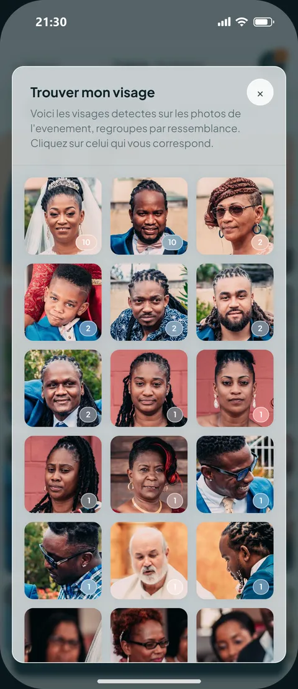

IA · Événementiel

Reconnaissance facialepgvectorNext.jsFastAPI
MYFACE
Les photos d'un mariage ou d'une remise de diplômes sont indexées automatiquement. Chaque invité retrouve les siennes en prenant un selfie, les achète et les télécharge en qualité originale, sans faire défiler des centaines d'images.
Mon rôle : conception produit et développement complet — backend, frontend, pipeline IA, déploiement.
31k lignes
23 suites de tests
512-d par visage
Code source privé — démonstration sur demande